USER GUIDE
How to use the UCN tools
Everything here works on a phone, keeps working with no signal once opened, and keeps your data on your own device. Want just the basics? There's a one-page quick-start sheet to print.
Welcome aboard, Cadet. This handbook is issued to every officer of the United Confederation Navy. Commit it to memory: on the bridge there is seldom time to read. A one-page quick-start card is posted at every station.
1. Getting started
Five minutes, once, and every tool is ready for you.
Before you report for duty, your personal terminal must be configured. It takes five minutes. Do it in the mess, not on the bridge.
- Open the site by scanning a QR code (from the quick-start sheet, or Share this site on someone's homepage) or going to finlay3110.github.io/UCNTOOLS.
- Add it to your home screen. iPhone: Share → Add to Home Screen, from the homepage only. Each iPhone home-screen app keeps its own data, so one icon for the homepage lets every tool share your details. Android: menu ⋮ → Install app.
- Set your name and rank in the homepage's Your Name & Rank card. Every tool fills them in wherever its own are blank. Send to another phone shows a QR code to copy them to a second device.
- Open each tool you'll use once with signal. After that it works with none.
- Back up now and then with Save backup on the homepage: one file holds every tool's data. Restore backup puts it on a new phone.
Everything you type stays on your own device. Nothing is sent anywhere unless you share it.
2. Before a session
Whoever is running the session plans the crew and sets up the mission. Everyone else scans one QR code.
A ship sails on its preparation. Command assigns stations and files the mission; the crew acknowledge their orders with a single scan.
Crew Rota
Open →Shares out the stations fairly, so everyone gets a turn somewhere new.
The duty roster. Every officer serves at every post in turn; the roster remembers who has stood where.
- Add who's here. Names are suggested from past rotas and Mission Companion's player roster.
- Remove any stations not in use, and tick Shuttle in use if it is.
- Pick anyone by hand who must have a station (often the Captain): they stay put.
- Shuffle fairly fills the rest, favouring stations people have had least. Shuffle again for a different rota.
- Share it as a link, Copy as text for Discord, or Show QR code. On this device, Mission Companion, General Log and Mission Stats can fill in from it.
What it looks like
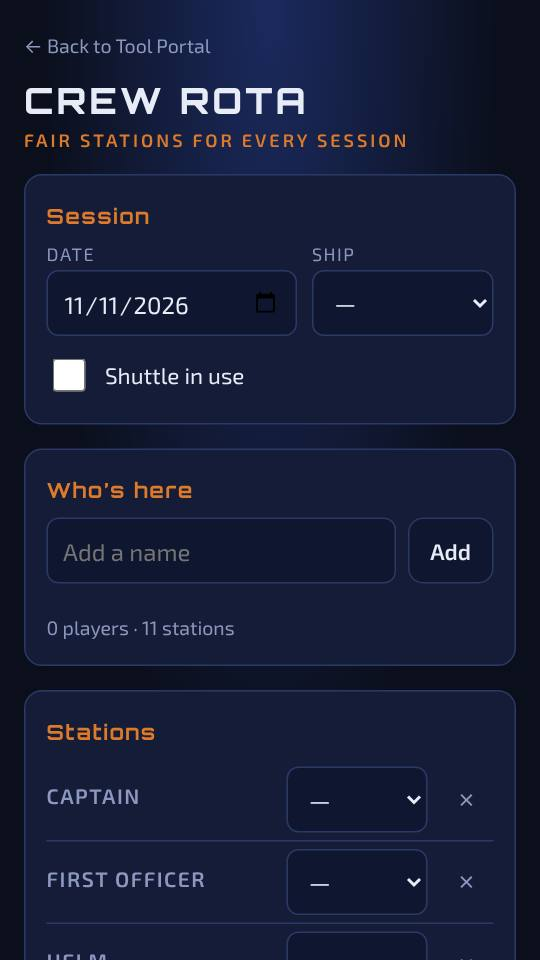
Mission Companion
Open →The mission's record: briefing, crew, a timed log during the mission, the debrief, and a PDF report at the end.
The ship's official record, kept by Command. Fleet Regulations require a report for every mission; this is how you file it.
- Briefing tab: operation, ship, date, mission type, who's filing the report, the briefing itself, and the Flight Controller and Training Officer.
- Crew tab: a card per station. Type names (the player roster suggests them) or tap Fill crew from the Crew Rota.
- More → Mission QR for the crew: show this code before the mission. Each player scans it and taps Load it into my tools; their logs then fill in the operation, ship and their own station.
- During the mission, use the Log tab (with Quick Actions and alert buttons) and Notes. After it, see After the mission.
What it looks like
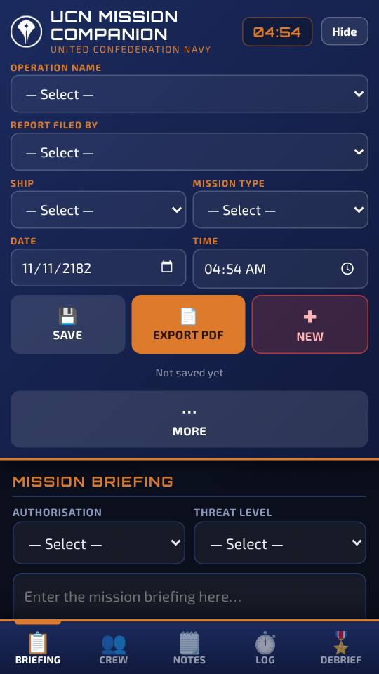
3. At your station
Open the tool for your station. If you scanned the Mission QR, its setup is already filled in.
Captain and First Officer: Mission Companion. Comms: Comms Log. Power Management and Damage Control: Engineering. Navigation and Radar: Nav Reference. Helm: Helm. Beams and Drone Operator: Tractor & Drones. Anyone: General Log for your own notes.
Report to your post and bring up your station terminal. Your orders are already loaded if you acknowledged the Mission QR. Remember the first rule of the bridge: never touch another officer's console without asking.
Command: Mission Companion. Comms: Comms Log. Engineering and Damage Control: Engineering. Navigation and Radar: Nav Reference. Helm: Helm. Beams and Drones: Tractor & Drones. Every officer keeps a General Log.
Comms Log
Open →Logs every message to and from other ships, ship by ship.
Every hail, every reply, every threat. If it was said over comms, it belongs in this log.
- Briefing: your name and rank, the mission, ship, date and time, and the Captain.
- Ships: add each ship you talk to, then log messages under it.
- Overall: every message from every ship, in time order.
- Export: a PDF of the log, the JSON file, Share Log, or Share Log as a Link for the report.
What it looks like
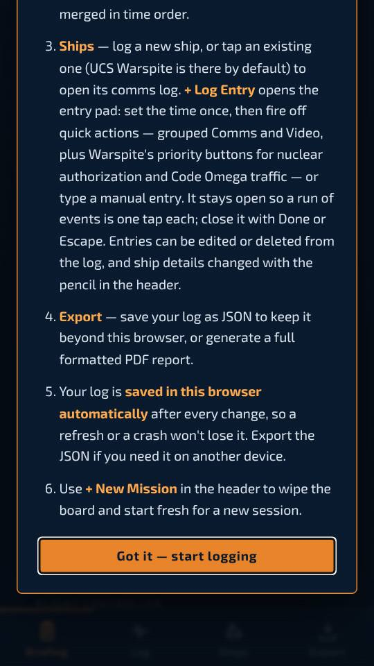
Engineering Reference
Open →Power, heat and warp reference, a Spike Timer, damage control locations for each ship, and an action log.
The Chief Engineer's bible. Keep the reactor fed, the systems cool, and know where every OCP and crystal lives before JUDITH asks for them.
- Setup: your name, the mission, the ship, and which sections you're running (Power, Damage Control, or both).
- Power Management, Thermal & Power Guide and Warp Guide: the figures from the Academy Manual. The Spike Timer (in Thermal & Power) counts down how long a spike can be held, and the Warp Guide ends with field setups for long hauls and quick sprints, and an Elite Hidden Tactic behind a code lock, for those who can crack it, with a diagram to play.
- Damage Control: where each OCP, crystal and warp switch is on the Takanami and the Havock, with the ship maps and your spare counts.
- Action Log: what you did and when. Export it as a PDF or JSON, or Share as link for the report.
What it looks like
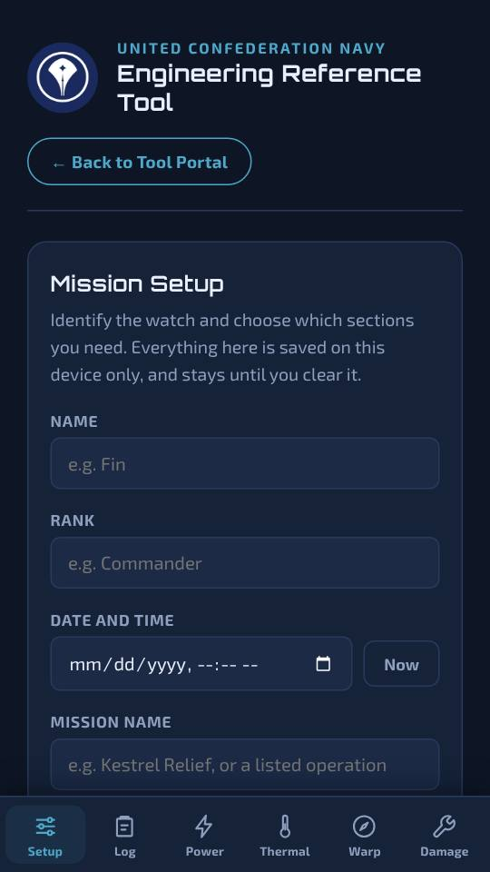
Helm
Open →Ship handling, journey and turn times, bearings, combat manoeuvre, the Academy's advanced manoeuvres, a pre-warp checklist and the warp setups.
You have the conn. Know how fast she turns, how long the run will take, and which set piece gets the crew out alive.
- Pick your ship at the top, the Takanami or the Havock; the tool remembers it. Then four tabs: Ship, Course, Manoeuvres and Warp.
- Ship: speed, turn rate, shields and hull, and combat manoeuvre: what heats what, and how long the reserve takes to refill.
- Course: a distance in sectors or U gives the time on impulse and at warp, with Engineering's power. Your heading and the target's bearing give which way to turn, how far, how long it takes, and the heading that puts the target astern.
- Manoeuvres: About Face, Breakthrough, Special Delivery, Longbow Shot and Monkey at the Zoo, each with a diagram (Start demonstration plays it out) and step by step with who says what, and the same Elite Hidden Tactic as Engineering, behind its code lock.
- Warp: a checklist and the calls to know before engaging warp, then the warp guide and its field setups.
What it looks like
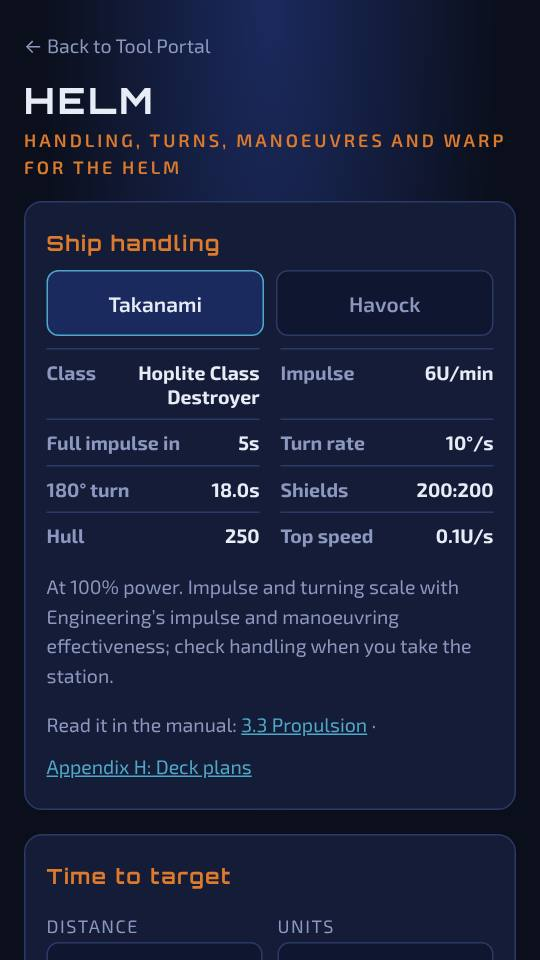
Tractor & Drones
Open →How far the tractor beam reaches at each arc, what it can drag, and drone and probe range by scanner power.
A narrow beam reaches far; a wide beam catches more. Know the difference before the torpedo arrives.
- Drag the beam arc to see its reach, drawn to scale, and which incoming ordnance it can push clear.
- Check what the tractor can drag at Cargo Docks 100% and 200–300%.
- Drag scanner effectiveness to see drone control range and probe scan radius.
What it looks like
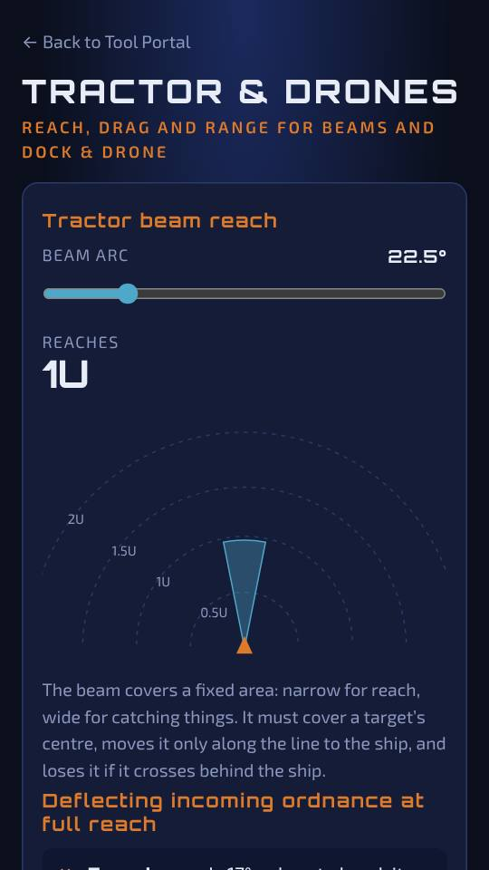
General Log
Open →Your own log from any station: orders, contacts, damage, repairs and anything else worth noting.
Every officer keeps a log. When the inquiry asks what happened, yours will be the one they trust.
- Setup: your name, rank, station, ship and mission. The Mission QR and Crew Rota fill in whatever they can.
- Add entries as they happen, each with a type: Order, Contact, Engagement, Damage, Repair, Comms, Navigation, Medical, Boarding, Observation or Incident.
- Export a PDF or JSON, or Share log / Share as a link for the report.
What it looks like
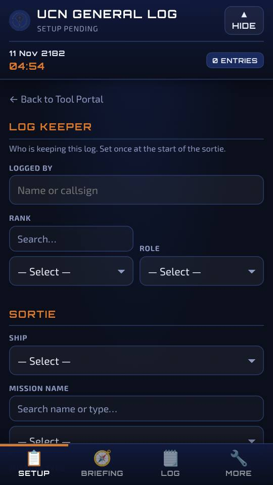
Tactical Aids Archive
Open →A searchable library of reference PDFs: navigation, engineering, identification, ship layouts and more.
The Academy library. Every chart and tactical aid the Fleet has issued, filed and searchable.
- Search by name, or browse by category.
- The UCN Academy Manual is under General Info. It asks a few questions first, at the author's request.
What it looks like
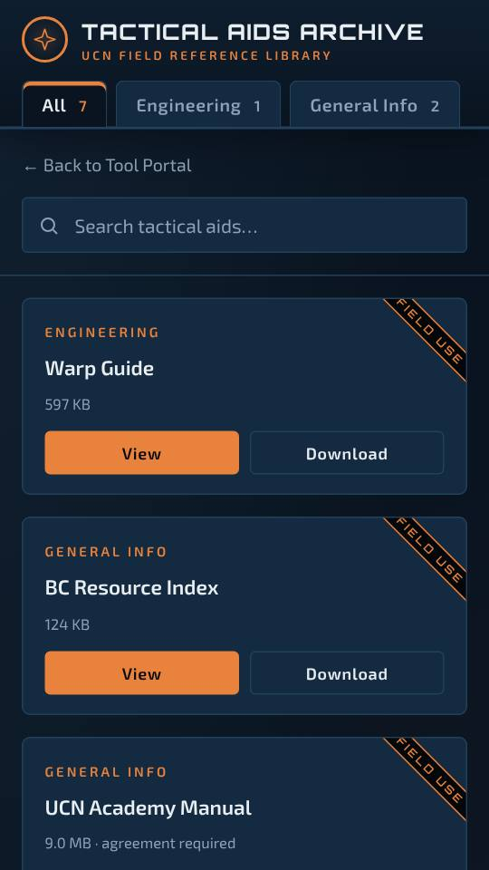
4. After the mission
Each player sends their log to whoever writes the report, who adds them to Mission Companion and exports the PDF.
The mission is not over until the report is filed. Every officer submits their log to Command before standing down.
- Players: in your tool, tap Share log (sends the file) or Share as a link. The link opens Mission Companion on the other phone, which asks before adding your log. Very long logs make long links: Discord only takes about 2,000 characters, so send those as a file.
- Report writer: in Mission Companion's Debrief tab, record the outcome, promotions and medals, and import any log files you were sent. Links add themselves when opened.
- Export PDF: choose whether to include the Report Certification page. If you do, the Captain (and the Reporting Officer, if that's someone else) can sign in a box on the phone, and the signature goes into the PDF. Leave a box empty to sign the printed copy.
Mission Stats
Open →Your personal mission history and charts, from the Bridge Command portal's deployment export.
Your service record. Every deployment, every ship, every station you have stood.
- Import the CSV of your deployments from the Bridge Command portal.
- Log: each mission as a card. Rate it and set the station you took; new ones start with your station from the Crew Rota.
- Charts: missions per month and your splits by ship, station and type, with a PDF export.
What it looks like
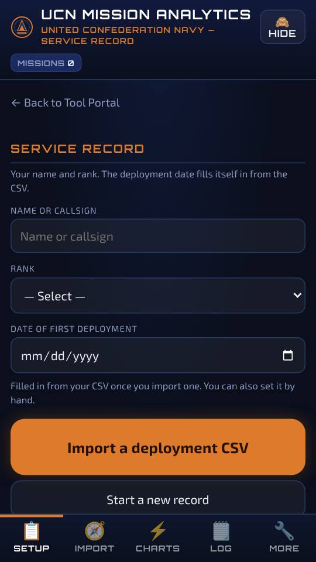
5. Off duty
Training games, the songbook, the mess and your ID card.
Rest is part of readiness. So is practice. The Academy recommends both, ideally not at the same time as the shanties.
Hacking Trainer
Open →Practise breaching a defence grid, as the Academy Manual describes hacking.
The Academy standard: a full breach on Secure in under 40 seconds without tripping a single defence routine. Few cadets manage it first time.
- Pick a level: Basic, Secure, Hardened or Fortified. Your first probe is always safe.
- Numbers show how many defence routines touch that node. Two routines end the attempt.
- Past the threshold you can Apply a partial breach; watch the Scanner heat and what the hack does to the target.
- After an attempt, Challenge a friend: a QR code gives them the same grid, and the result says who won.
What it looks like
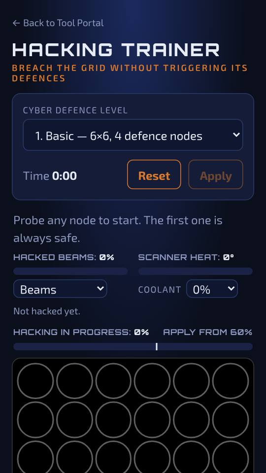
Bridge Drills
Open →Ten-question quizzes from the Academy Manual.
Drill until it's instinct. On the bridge you won't have time to think about which colour means hostile.
- Pick a drill: Radar recognition, Ordnance choice, Callouts or Damage Control (where every OCP, crystal and switch is on each ship, with the map shown once you answer).
- Your best score and time are kept, and can be shared as a picture with your name.
- Challenge a friend after a round: the same ten questions, and the result says who won.
What it looks like
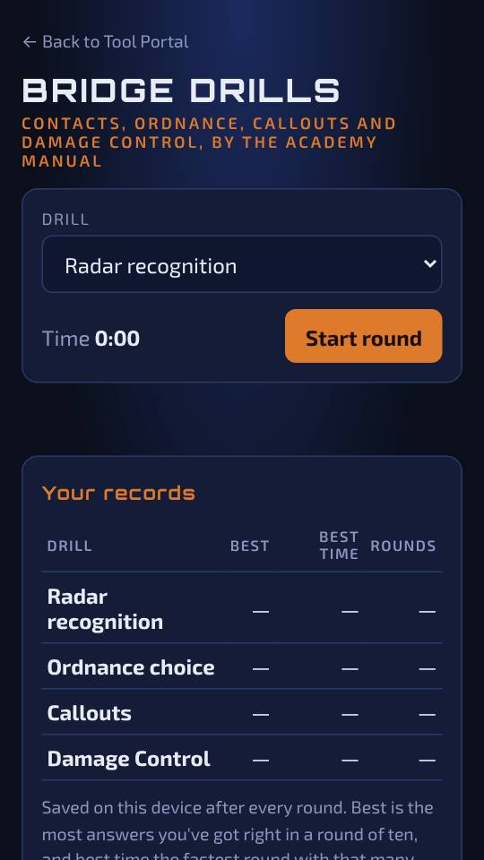
Scan Trainer
Open →Practice for the Radar scan: tune out the noise until the signal locks, against the clock.
An unscanned contact is a question the Captain is still waiting on. Lock it fast.
- Press Scan. Each scan has two stages: move the slider until the noisy red, green and blue signal pulls into one clean wave, then hold it there until it shows LOCKED.
- Level 1 has one slider per stage; Level 2 has two, and the signal only comes clean when both are right.
- The clock runs from the moment you press Scan. Your best time and number of scans for each level are kept, and can be shared as a picture with your name.
- Challenge a friend after a scan: the QR code gives them the same contact, both stages and the same hidden settings, and tells them who was faster.
What it looks like
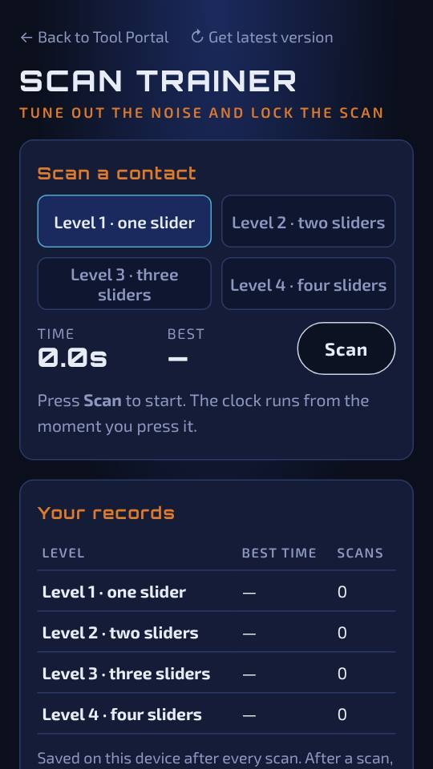
Shanty Songbook
Open →Every song, searchable, with chorus highlighting, favourites and set lists.
A ship that sings together fights together. Learn the words.
- Search by title, tune, author or lyrics, or filter by category. Star your favourites.
- Set lists: line songs up in order and share the set as a link.
- Auto-scroll and keep-screen-awake for singing hands-free, and a PDF of the whole book.
- Know one that's missing? Suggest a song above the song list.
What it looks like
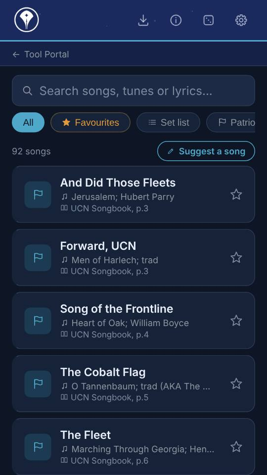
Mess Drink Tracker
Open →Logs the drinks you've tried from the mess menu.
The mess keeps a menu. Officers keep count.
- Set your profile, then Log a drink from the menu.
- This session shows tonight's tally, and the Menu marks every drink you've tried.
What it looks like
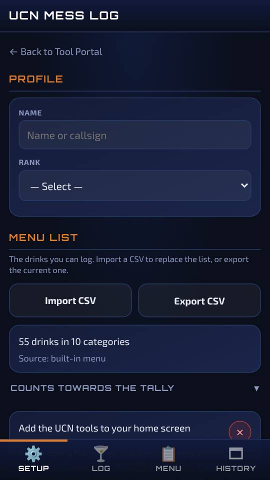
ID Card Generator
Open →Makes a UCN ID card with your photo, ready to print.
Every officer carries identification. Keep yours current.
- Fill in your details and add a photo; choose a barcode or QR code.
- Download print-ready files, or follow Get it printed on plastic.
What it looks like
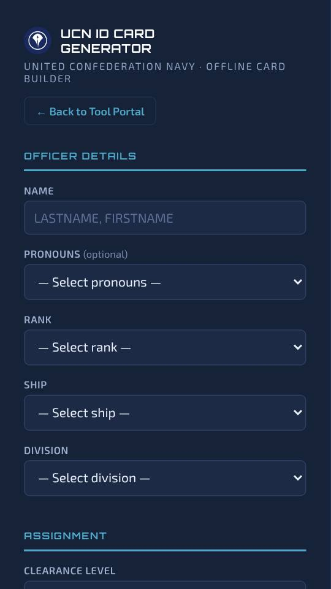
Ship Search
Open →Which ship, the UCS Havock or the UCS Takanami, is running at a given date and time, or a whole day's timetable.
Know which vessel you're reporting to before you arrive at the dock.
- Pick a date and time to see which ship is running, or view the day's timetable.
What it looks like
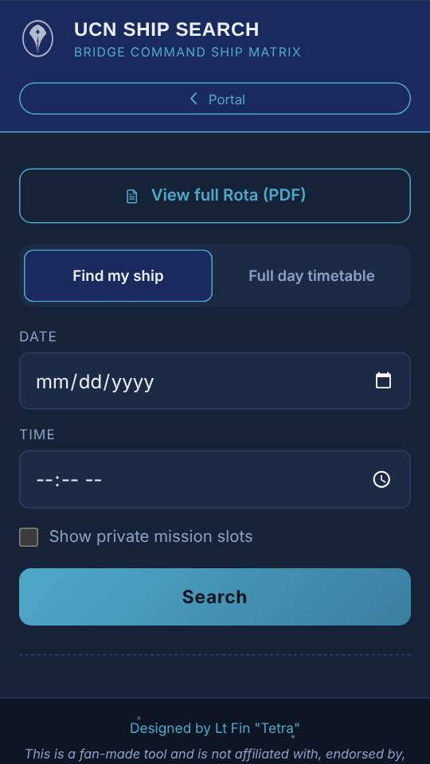
6. Problems and questions
- A tool looks out of date.
- Tap ↻ Get latest version next to Back to Tool Portal (in Mission Companion it’s in the More menu): that tool reloads from the site. To do every tool at once, use Clear offline copies & reload on the homepage. Your logs and records are kept either way.
- My logs have gone, or I have a new phone.
- Everything lives only on the phone it was made on. Restore backup on the homepage brings back a backup you saved. Without one, it can't be recovered, so back up regularly.
- On iPhone, my name isn't filling in, or the Mission QR didn't reach a tool.
- Each iPhone home-screen app keeps separate data. Add only the homepage to your home screen and open the tools from there.
- The Mission QR didn't fill in my station.
- Your name in the tools must match the crew list. It only fills fields that are blank, and lasts 18 hours.
- A QR code won't scan.
- Turn the screen brightness up and hold the phones a little further apart. Every QR screen also has Copy link and Share.
- A log link didn't work.
- Long links can be cut short by some apps (Discord takes about 2,000 characters). Send it again through WhatsApp or email, or share the file instead.
- Something's broken, or you have an idea.
- Post in the BC Discord or message Tetra (Discord: finlay3110).